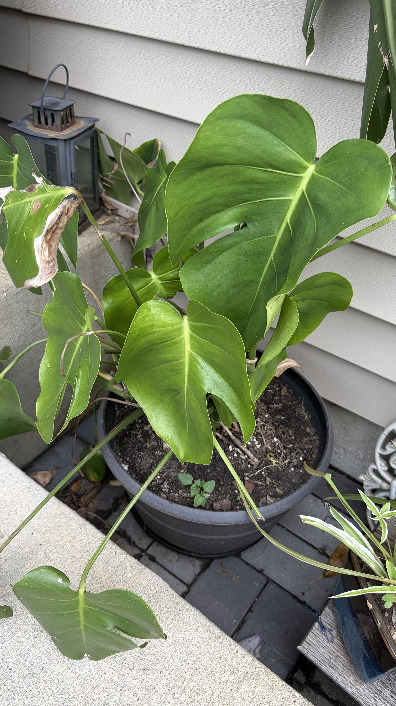

Sun
Update sun requirements for this plant.
Plant care and location details for your garden

Photo: split-leaf_philodendron.jpeg
Update sun requirements for this plant.
Update watering frequency and amount.
Update the soil type and mix.
Update your feed schedule and product.
Update pruning or maintenance notes.
Update companion plants and placement.
Add your experience, pests, recipes, or harvest details here.